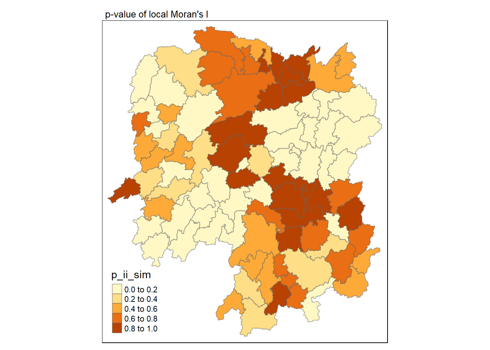
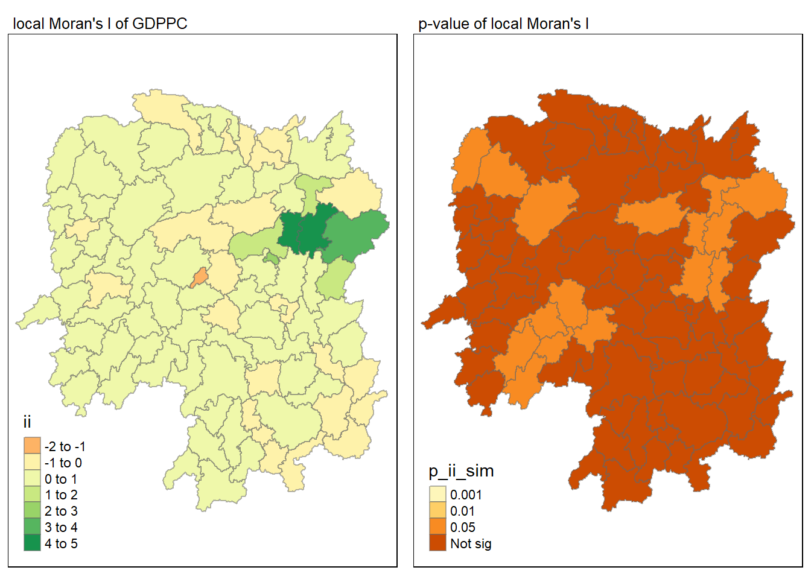
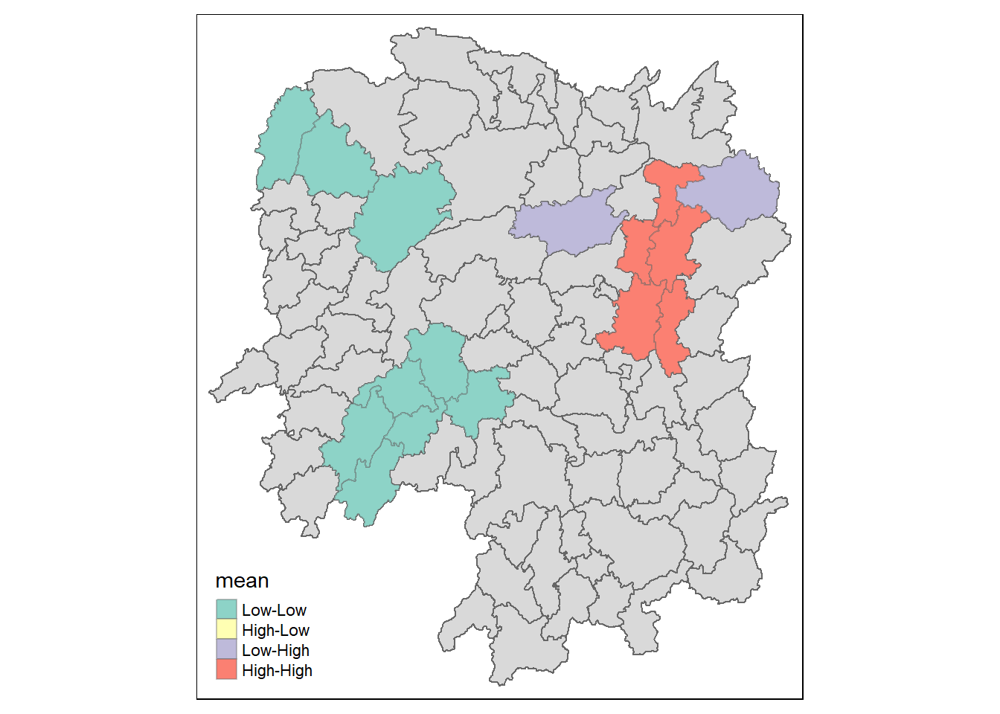

pacman::p_load(sf, sfdep, tmap, tidyverse, knitr, plotly)In-Class Exercise 2 - Spatial Weights - sfdep
1. Overview
In this in-class exercise, an alternative R package to spdep package that will be used in . The package is called sfdep. Acc
2. Getting Started
2.1 Installing and Loading the R packages
Five R packages will used for this in-class exercise, they are sf, tidyverse, sfdep, tmap and knitr.
- sf: for importing and handling of geospatial data
- tidyverse: for performing data science tasks such as importing, wrangling and visualising data
- sfdep: used to compute spatial weights, global and local spatial autocorrelation statistics, and
- tmap: used to prepare cartographic quality choropleth map.
- knitr: a general-purpose literate programming engine, with lightweight API’s designed to give users full control of the output without heavy coding work.
2.2 The Data
Two data sets will be used in this in-class exercise, they are:
- Hunan province administrative boundary layer at county level. This is a geospatial data set in ESRI shapefile format.
- Hunan_2012.csv. This csv file contains selected Hunan’s local development indicators in 2012.
2.3 Importing the data
In this section, we will learn how to bring a geospatial data and its associated attribute table into R environment. The geospatial data is in ESRI shapefile format and the attribute table is in csv fomat.
2.3.1 Import shapefile into R environment
The code chunk below uses st_read() of sf package to import Hunan shapefile into R. The imported shapefile will be simple features Object of sf.
hunan <- st_read(dsn = "data/geospatial",
layer = "Hunan")Reading layer `Hunan' from data source
`C:\Users\Dabbie Neo\Desktop\Geospatial_Analytics\dneoo\ISSS624\In-class_Ex\In-class_Ex02\data\geospatial'
using driver `ESRI Shapefile'
Simple feature collection with 88 features and 7 fields
Geometry type: POLYGON
Dimension: XY
Bounding box: xmin: 108.7831 ymin: 24.6342 xmax: 114.2544 ymax: 30.12812
Geodetic CRS: WGS 842.3.2 Import csv file into R environment
Next, we will import Hunan_2012.csv into R by using read_csv() of readr package. The output is R data frame class.
hunan2012 <- read_csv("data/aspatial/Hunan_2012.csv")Rows: 88 Columns: 29
── Column specification ────────────────────────────────────────────────────────
Delimiter: ","
chr (2): County, City
dbl (27): avg_wage, deposite, FAI, Gov_Rev, Gov_Exp, GDP, GDPPC, GIO, Loan, ...
ℹ Use `spec()` to retrieve the full column specification for this data.
ℹ Specify the column types or set `show_col_types = FALSE` to quiet this message.2.3.3 Performing relational join
The code chunk below will be used to update the attribute table of hunan’s SpatialPolygonsDataFrame with the attribute fields of hunan2012 dataframe. This is performed by using left_join() of dplyr package.
hunan_GDPPC <- left_join(hunan,hunan2012) %>%
select(1:4, 7, 15) # only pick out column 1-4, 7 and 15Joining with `by = join_by(County)`#both have same observation, have the same unique identifier, so don't have to specify ::: callout - important In order to retain the geospatial properties, the left data frame must be the sf data.frame (i.e hunan). :::
3. Plotting a chloropleth map
Now, we are going to prepare a basemap and a choropleth map showing the distribution of GDPPC 2012 by using qtm() of tmap package.
basemap <- tm_shape(hunan_GDPPC) +
tm_polygons() +
tm_text("NAME_3", size=0.5)
gdppc <- qtm(hunan_GDPPC, "GDPPC")
tmap_arrange(basemap, gdppc, asp=1, ncol=2)
4. Deriving contiguity weights: Queen’s method
In the code chunk below, queen method is used to derive the contiguity weights
wm_q <- hunan_GDPPC %>%
mutate(nb = st_contiguity(geometry),
wt = st_weights(nb,
style = "W"),
.before = 1)Notice that st_weights() provides three arguments, they are,
nb: A neighbour list object as created by st_neighbours()
style: Default “W” for row standardized weights. This value can be “B”, “C”, “U”, “minmax”, abd “S”. B is the basic binary coding, W is row standardised (sums over all links to n), C is globally standardised (sums over all links to n), U is equal to C divided by the number of neighbors (sum over all links to unity), while S is the variance-stabilizing coding scheme proposed by Tiefelsdorf et al.1999,p.167-168 (sum over all links to n)
allow_zero: If TRUE, assigns zero as lagged value to zone without neighbours.
5. Distance based Weights
There are three popularly used distance-based spatial weights, they are:
fixed distance weights,
adaptive distance weights, and
inverse distance weights (IDW)
5.1 Deriving fixed distance weights
Before we can derive the fixed distance weights, we need to first determine the upper limit for distance band by using the steps below:
geo <- sf::st_geometry(hunan_GDPPC)
nb <- st_knn(geo, longlat = TRUE)! Polygon provided. Using point on surface.Warning in st_point_on_surface.sfc(geometry): st_point_on_surface may not give
correct results for longitude/latitude datadists <- unlist(st_nb_dists(geo, nb))! Polygon provided. Using point on surface.Warning in st_point_on_surface.sfc(geometry): st_point_on_surface may not give
correct results for longitude/latitude dataNext, we will generate the summary statistics of the nearest neighbour distances vector (i.e. dists) using the code chunk below.
summary(dists) Min. 1st Qu. Median Mean 3rd Qu. Max.
21.56 29.11 36.89 37.34 43.21 65.80 The summary statistics report above shows that the maximum nearest neighbour distance is 65.80km. By using a threshold value of 66km, will ensure that each area will have at least one neighbour.
Now we will go ahead to compute the fixed distance weights by using the code chunk below.
wm_fd <- hunan_GDPPC %>%
mutate(nb = st_dist_band(geometry,
upper = 66),
wt = st_weights(nb),
.before = 1)! Polygon provided. Using point on surface.Warning: There was 1 warning in `stopifnot()`.
ℹ In argument: `nb = st_dist_band(geometry, upper = 66)`.
Caused by warning in `st_point_on_surface.sfc()`:
! st_point_on_surface may not give correct results for longitude/latitude data5.2 Deriving adaptive distance weights
In this section, we will derive an adaptive spatial weights by using the code chunk below.
wm_ad <- hunan_GDPPC %>%
mutate(nb = st_knn(geometry,
k=8),
wt = st_weights(nb),
.before = 1)! Polygon provided. Using point on surface.Warning: There was 1 warning in `stopifnot()`.
ℹ In argument: `nb = st_knn(geometry, k = 8)`.
Caused by warning in `st_point_on_surface.sfc()`:
! st_point_on_surface may not give correct results for longitude/latitude data5.3 Calculating inverse distance weights
In this section, you will derive an inverse distance weights by using the code chunk below.
wm_idw <- hunan_GDPPC %>%
mutate(nb = st_contiguity(geometry),
wts = st_inverse_distance(nb, geometry,
scale = 1,
alpha = 1),
.before = 1)! Polygon provided. Using point on surface.Warning: There was 1 warning in `stopifnot()`.
ℹ In argument: `wts = st_inverse_distance(nb, geometry, scale = 1, alpha = 1)`.
Caused by warning in `st_point_on_surface.sfc()`:
! st_point_on_surface may not give correct results for longitude/latitude datawm_idwSimple feature collection with 88 features and 8 fields
Geometry type: POLYGON
Dimension: XY
Bounding box: xmin: 108.7831 ymin: 24.6342 xmax: 114.2544 ymax: 30.12812
Geodetic CRS: WGS 84
First 10 features:
nb
1 2, 3, 4, 57, 85
2 1, 57, 58, 78, 85
3 1, 4, 5, 85
4 1, 3, 5, 6
5 3, 4, 6, 85
6 4, 5, 69, 75, 85
7 67, 71, 74, 84
8 9, 46, 47, 56, 78, 80, 86
9 8, 66, 68, 78, 84, 86
10 16, 17, 19, 20, 22, 70, 72, 73
wts
1 0.01526149, 0.03515537, 0.02176677, 0.02836978, 0.01029857
2 0.01526149, 0.01601100, 0.01911052, 0.02327058, 0.01591694
3 0.03515537, 0.04581089, 0.04116397, 0.01208437
4 0.02176677, 0.04581089, 0.04637578, 0.01585302
5 0.04116397, 0.04637578, 0.01896212, 0.01351099
6 0.01585302, 0.01896212, 0.02710909, 0.01140718, 0.01080890
7 0.01621067, 0.01536702, 0.01133628, 0.01836488
8 0.01930410, 0.02675555, 0.02151751, 0.01076895, 0.02608065, 0.01519804, 0.01337412
9 0.01930410, 0.01651371, 0.01798519, 0.01473155, 0.03015561, 0.01612293
10 0.02737233, 0.01390810, 0.01458881, 0.02156771, 0.02419268, 0.02350470, 0.01784174, 0.01621545
NAME_2 ID_3 NAME_3 ENGTYPE_3 County GDPPC
1 Changde 21098 Anxiang County Anxiang 23667
2 Changde 21100 Hanshou County Hanshou 20981
3 Changde 21101 Jinshi County City Jinshi 34592
4 Changde 21102 Li County Li 24473
5 Changde 21103 Linli County Linli 25554
6 Changde 21104 Shimen County Shimen 27137
7 Changsha 21109 Liuyang County City Liuyang 63118
8 Changsha 21110 Ningxiang County Ningxiang 62202
9 Changsha 21111 Wangcheng County Wangcheng 70666
10 Chenzhou 21112 Anren County Anren 12761
geometry
1 POLYGON ((112.0625 29.75523...
2 POLYGON ((112.2288 29.11684...
3 POLYGON ((111.8927 29.6013,...
4 POLYGON ((111.3731 29.94649...
5 POLYGON ((111.6324 29.76288...
6 POLYGON ((110.8825 30.11675...
7 POLYGON ((113.9905 28.5682,...
8 POLYGON ((112.7181 28.38299...
9 POLYGON ((112.7914 28.52688...
10 POLYGON ((113.1757 26.82734...6. Cluster and Outlier Analysis
6.1 Computing local Moran’s I
In this section, we will compute local Moran’s I of GDPPC at county level by using local_moran() of sfdep package.
lisa <- wm_q %>%
mutate(local_moran =local_moran(
GDPPC, nb, wt, nsim =99),
.before = 1) %>%
unnest(local_moran) #unnest to individual columnsuse mean or median, look at the distribution, if GDPPC is skewed use median instead of mean.
The output of local_moran() is a sf data.frame containing the columns ii, eii, var_ii, z_ii, p_ii, p_ii_sim, and p_folded_sim.
ii: local moran statistic
eii: expectation of local moran statistic; for localmoran_permthe permutation sample means
var_ii: variance of local moran statistic; for localmoran_permthe permutation sample standard deviations
z_ii: standard deviate of local moran statistic; for localmoran_perm based on permutation sample means and standard deviations
p_ii: p-value of local moran statistic using pnorm(); for localmoran_perm using standard deviatse based on permutation sample means and standard deviations
p_ii_sim: For
localmoran_perm(),rank()andpunif()of observed statistic rank for [0, 1] p-values usingalternative=p_folded_sim: the simulation folded [0, 0.5] range ranked p-value based on crand.py of pysal
skewness: For
localmoran_perm, the output of e1071::skewness() for the permutation samples underlying the standard deviateskurtosis: For
localmoran_perm, the output of e1071::kurtosis() for the permutation samples underlying the standard deviates.
6.1.1 Visualising local Moran's I
In this code chunk below, tmap functions are used prepare a choropleth map by using value in the ii field.
tmap_mode("plot")tmap mode set to plottingtm_shape(lisa) +
tm_fill("ii") +
tm_borders(alpha = 0.5) +
tm_view(set.zoom.limits = c(6,8)) +
tm_layout(main.title = "local Moran's I of GDPPC",
main.title.size = 0.8)Variable(s) "ii" contains positive and negative values, so midpoint is set to 0. Set midpoint = NA to show the full spectrum of the color palette.
6.1.2 Visualising p-value of local Moran's I
In the code chunk below, tmap functions are used prepare a choropleth map by using value in the p_ii_sim field.
tmap_mode("plot")tmap mode set to plottingtm_shape(lisa) +
tm_fill("p_ii_sim") +
tm_borders(alpha = 0.5) +
tm_layout(main.title = "p-value of local Moran's I",
main.title.size = 0.8)
6.1.3 Visualising local Moran's I and p-value
For effective comparison, it will be better for us to plot both maps next to each other as shown below.
tmap_mode("plot")tmap mode set to plottingmap1 <- tm_shape(lisa) +
tm_fill("ii") +
tm_borders(alpha = 0.5) +
tm_view(set.zoom.limits = c(6,8)) +
tm_layout(main.title = "local Moran's I of GDPPC",
main.title.size = 0.8)
map2 <- tm_shape(lisa) +
tm_fill("p_ii_sim",
breaks = c(0, 0.001, 0.01, 0.05, 1),
labels = c("0.001", "0.01", "0.05", "Not sig")) +
tm_borders(alpha = 0.5) +
tm_layout(main.title = "p-value of local Moran's I",
main.title.size = 0.8)
tmap_arrange(map1, map2, ncol = 2)Variable(s) "ii" contains positive and negative values, so midpoint is set to 0. Set midpoint = NA to show the full spectrum of the color palette.
6.2 Visualising LISA map
LISA map is a categorical map showing outliers and clusters. There are two types of outliers namely: High-Low and Low-High outliers. Likewise, there are two type of clusters namely: High-High and Low-Low cluaters. In fact, LISA map is an interpreted map by combining local Moran's I of geographical areas and their respective p-values.
In lisa sf data.frame, we can find three fields contain the LISA categories. They are mean, median and pysal. In general, classification in mean will be used as shown in the code chunk below.
lisa_sig <- lisa %>%
filter(p_ii_sim < 0.05)
tmap_mode("plot")tmap mode set to plottingtm_shape(lisa) +
tm_polygons() +
tm_borders(alpha = 0.5) +
tm_shape(lisa_sig) +
tm_fill("mean") +
tm_borders(alpha = 0.4)Warning: One tm layer group has duplicated layer types, which are omitted. To
draw multiple layers of the same type, use multiple layer groups (i.e. specify
tm_shape prior to each of them).
GDPPC <- read_csv("data/aspatial/Hunan_GDPPC.csv")Rows: 1496 Columns: 3
── Column specification ────────────────────────────────────────────────────────
Delimiter: ","
chr (1): County
dbl (2): Year, GDPPC
ℹ Use `spec()` to retrieve the full column specification for this data.
ℹ Specify the column types or set `show_col_types = FALSE` to quiet this message.5.2 Creating a Time Series Cube
The code chunk below, spacetime() of sfdep is used to create a spacetime cube.
GDPPC_st <- spacetime(GDPPC, hunan,
.loc_col = "County",
.time_col = "Year")Next, is_spacetime_cube() of sfdep package will be used to verify if GDPPC_st is indeed a space_time cube object
is_spacetime_cube(GDPPC_st)[1] TRUEThe code chunk below will be used to identify neighbours and to derive an inverse distance weights.
GDPPC_nb <- GDPPC_st %>%
activate("geometry") %>%
mutate(nb = include_self(st_contiguity(geometry)),
wt = st_inverse_distance(nb, geometry,
scale = 1,
alpha = 1),
.before = 1)%>%
set_nbs("nb") %>%
set_wts("wt")! Polygon provided. Using point on surface.Warning: There was 1 warning in `stopifnot()`.
ℹ In argument: `wt = st_inverse_distance(nb, geometry, scale = 1, alpha = 1)`.
Caused by warning in `st_point_on_surface.sfc()`:
! st_point_on_surface may not give correct results for longitude/latitude dataCompute Gi*
We can use these two new columns to manually calculate the local Gi* for each location. We can do this by grouping by Year and using local_gstar_perm() of sfdep package. After which, we use unnest() to unnest gi_star column of the newly created gi_stars data.frame.
gi_stars <- GDPPC_nb %>%
group_by(Year) %>%
mutate(gi_star = local_gstar_perm(
GDPPC, nb, wt)) %>%
tidyr::unnest(gi_star)Mann-Kendall Test
With these Gi* measures, we can evaluate each location for a trend using the Mann-Kendall test. The code chunk below uses Changsha county.
cbg <- gi_stars %>%
ungroup() %>%
filter(County == "Changsha") |>
select(County, Year, gi_star)Next, we plot the result by using the ggplot2 functions,
p <- ggplot(data = cbg,
aes(x = Year,
y = gi_star)) +
geom_line() +
theme_light()
ggplotly(p)Performing Emerging Hotspot Analysis
Lastly, we will perform EHSA analysis by using emerging_hotspot_analysis() of sfdep package. It takes a spacetime object c (i.e GDPPC_st), and the quoted name of the variable of interest (i.e. GDPPC) for .var argument. The k argument is used to specify the number of time lags which is set to 1 by default. Lastly, nsim map numbers of simulation is performed.
#ehsa <- emerging_hotspot_analysis(
# x = GDPPC_st,
# .var = "GDPPC",
# k = 1,
# nsim =99
#)Next. tmap function will be used to plot a categorical choropleth map using the code chunk below.
#ehsa_sig <- hunan_ehsa %>%
# filter(p_value < 0.05)
#tmap_mode("plot")
#tm_shape(hunan_ehsa) +
# tm_polygons() +
# tm_borders(alpha = 0.5) +
# tm_shape(ehsa_sig) +
# tm_fill("classification") +
# tm_borders(alpha = 0.4)